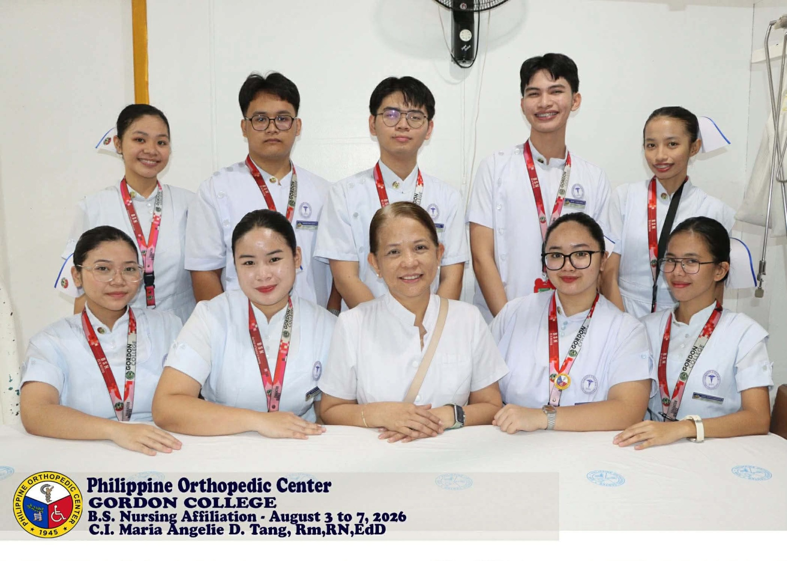

Our Mission
To provide accessible, understandable, and compassionate health education and guidance that empower older adults, caregivers, and community health workers to make informed health decisions.
Helpful health information and simpler ways to connect with care — made with Filipino older adults and their families in mind.
✓Clear information. Friendly guidance. Care with dignity.

Choose what you need. Explore at your own pace.
We are BSN-3B Nursing Students of Gordon College. AlagaLink is our student-developed initiative created to make health information and guidance more approachable for older adults, their families, and community health workers.
To provide accessible, understandable, and compassionate health education and guidance that empower older adults, caregivers, and community health workers to make informed health decisions.
A community where every older adult feels valued, informed, supported, and connected to appropriate healthcare resources.
AlagaLink is designed with the needs of older adults and the people who support them in mind.
Older adults seeking clear health information, wellness guidance, and support in navigating care.
Family members who help with daily care, appointments, safety, and health decisions.
Community health workers who share reliable health education and help connect residents with appropriate services.
These are educational and support features of this student prototype, not live clinical services.
Explore common health questions and learn what information to prepare before speaking with a licensed nurse or provider. This demo does not provide live nursing advice.
Use the sample tracker to record blood pressure, blood glucose, or weight for personal discussion with a healthcare professional.
Read simple guides about common conditions, prevention, healthy routines, and warning signs.
Find practical reminders for safer daily care, communication, respect, and caregiver well-being.
Learn when to contact a barangay health center, clinic, or qualified healthcare professional for further assessment.
Simple introductions to health topics that may matter as we age.
Understand blood pressure numbers and how to measure them correctly.
Learn about glucose checks, warning signs, food choices, and foot care.
Explore arthritis, osteoporosis, safe movement, and joint care.
Recognize common changes and know when to get checked.
Explore balanced Filipino meals, fluids, and changes in appetite.
Learn about sleep, loneliness, grief, stress, and support.
Keep a medicine list and ask before making any changes.
Explore memory, stroke, kidney, heart, and lung health.
Make everyday spaces safer and learn about balance and footwear.
No topics found. Try another search.
Health information helps you prepare questions, but it does not replace advice from your doctor or another qualified healthcare professional.
Telehealth lets you connect with a healthcare professional using a phone, tablet, or computer. Depending on the service, you may talk by video, voice call, or secure messages.
Recording readings can help you discuss patterns with your healthcare professional. This demonstration stores entries only in this browser and clears them when you close or refresh the page.
This tool does not interpret readings or provide a diagnosis. Ask your healthcare professional about your personal target range.
Try this sample form to see what an appointment request might look like. It does not contact a clinic, reserve a real schedule, or transmit your information.
Caregiving can be meaningful, but it can also be challenging. Small, respectful actions can make daily care safer and more comfortable.
Do not wait for an online consultation for chest pain, severe difficulty breathing, sudden face drooping, sudden arm weakness, or sudden trouble speaking. Call 911 in the Philippines or seek emergency care immediately.
For emergencies, do not use this website or wait for a reply.
Call 911 for any life-threatening problem. Seek emergency care immediately.
Student project contact line; availability is subject to the group's schedule.
Email us with general questions or feedback:
AlagaLink.bsn3b.b3@gmail.comPlease do not email sensitive medical information.AlagaLink is a student educational prototype. It is not a hospital or clinic record system and should not be used to submit confidential patient information.
We aim to observe the principles of the Philippine Data Privacy Act of 2012 (Republic Act No. 10173): transparency, legitimate purpose, and proportionality. This notice describes the prototype and is not a substitute for an institution's formal privacy policy.
The sample health tracker and appointment request form operate only in your current browser session. They do not send entries to AlagaLink or save them to a server. Your email app may process information if you choose to send us an email.
The demonstration fields show how wellness records or appointment requests might be organized for learning. They are not collected by the student project.
Tracker entries and form details are displayed locally on your device during use. The student group does not receive them through this website. Avoid entering real names, diagnoses, contact details, or other sensitive health information.
Under applicable data privacy law, individuals may have rights to be informed, access, object, rectify, erase or block, and seek redress, subject to legal conditions. For concerns about personal information shared directly with the group, contact us using the email above.